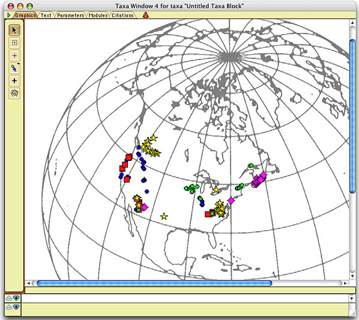
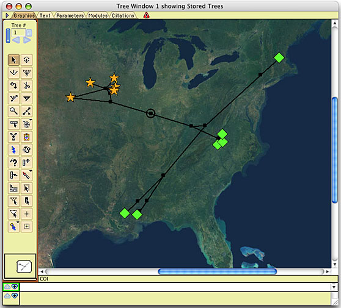

Cartographer: A Mesquite module for plotting geographic data
Cartographer requires Mesquite 1.06 or later.
The Cartographer package allows one to plot the geographic location of taxa onto a calibrated map. It can either plot taxa separately in a taxa window, as shown here:

Base map from Snyder, 1987
or on a tree in a tree window, as shown here:

Image of North America courtesy NASA/JPL-Caltech
The following sections are available in this manual to help you use Cartographer:
- Getting Started
Installation of Cartographer, and a list of the basic steps you need to produce a map in Cartographer - Sources of Maps
Some suggestions for sources of the map you will use as your background image. - Projections
An overview of the different sorts of map projections (e.g., Transverse Mercator, Lambert Azimuthal Equal-Area) available in cartographer - Calibration & Parameters
How to calibrate you map so that it displays locations correctly. - Adding data
Entering latitude and longitude data in Mesquite's data editor, or using the Add Taxon Tool, or by importing an XML file containing the data. - Ancestral locations
How Cartographer calculates the location of ancestral nodes on a tree. - Taxon symbol & groups
Changing the shape, size, and color of the symbols used for taxon "dots". - Tools
An overview of the various tools available for examining or altering your map in the taxa or tree window. - Display Options
Adjusting the display of the map, including adding a longitude/latitude grid and dimming the map image. - Graphics Files
How to save your image as an editable graphics file. - Citing Cartographer
How to cite Cartographer. - Download Cartographer
The page from which you can download Cartographer. - Cartographer Source Code
Download the source code of Cartographer.
TO DO:
- fix up download page
- fix up source page
- change template so isn't beta any more
- change requirement to Mesquite 1.07
- see sources.html for more